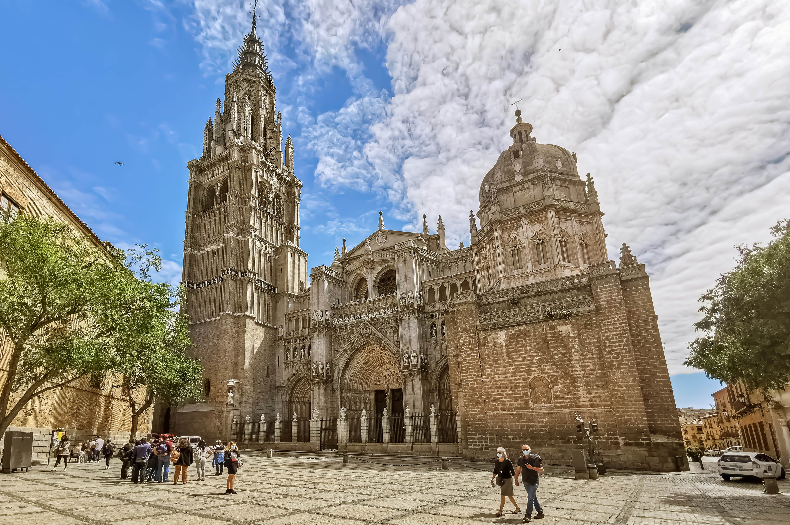
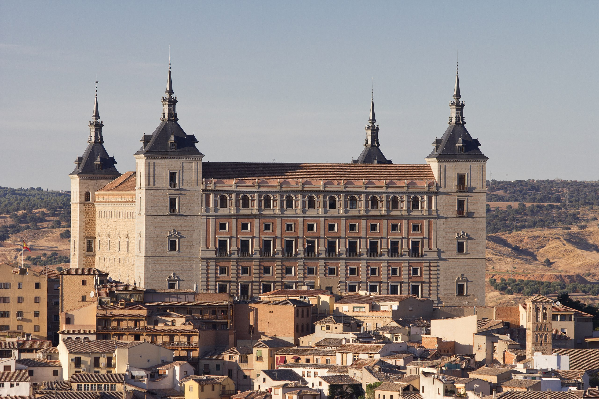
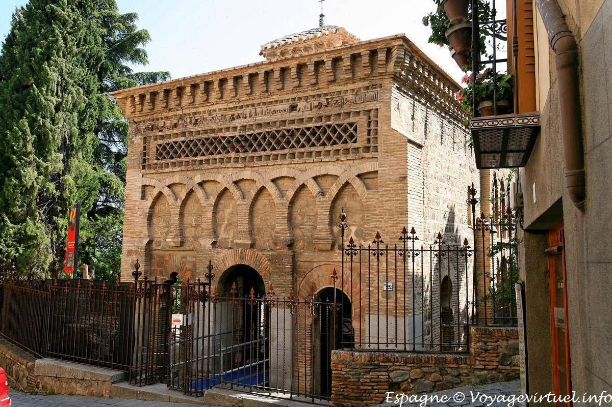
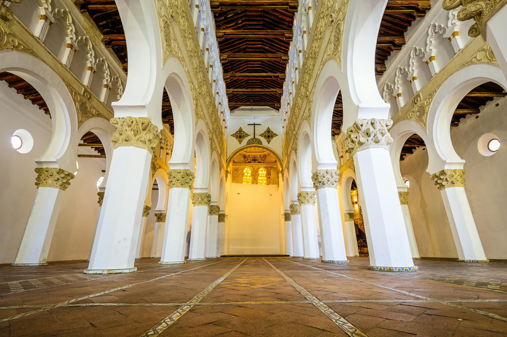
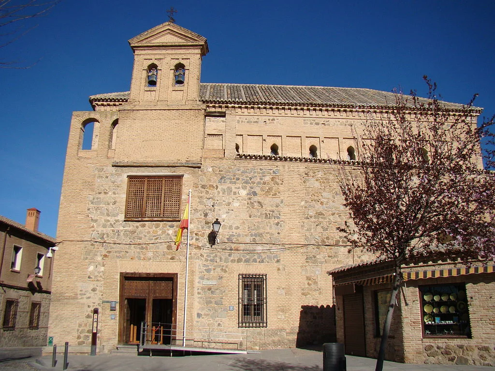
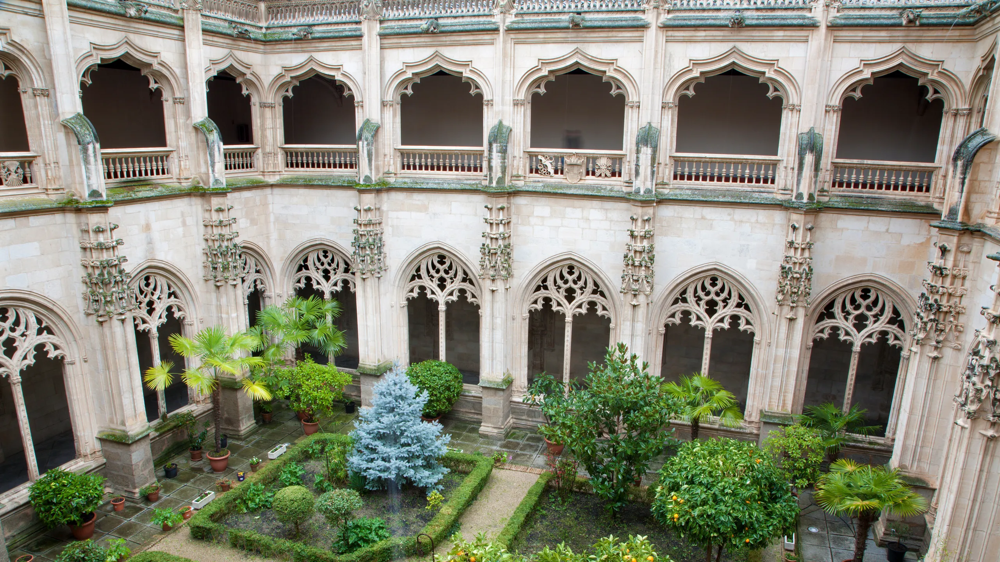
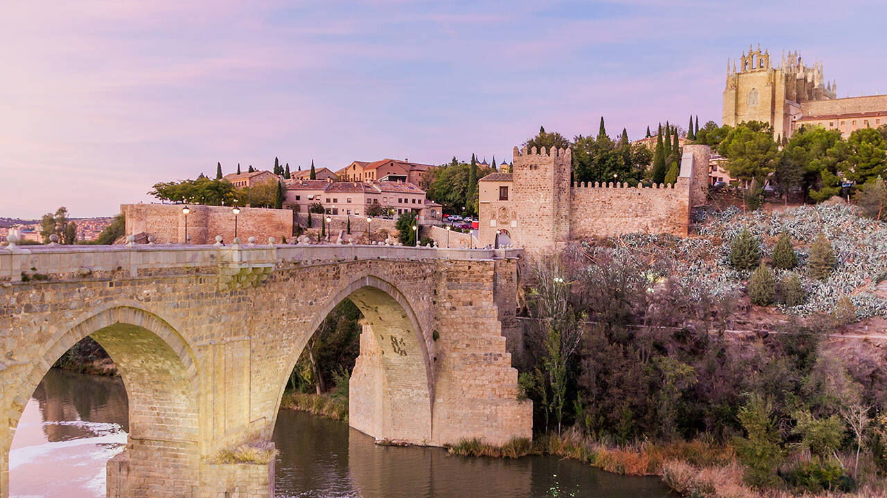
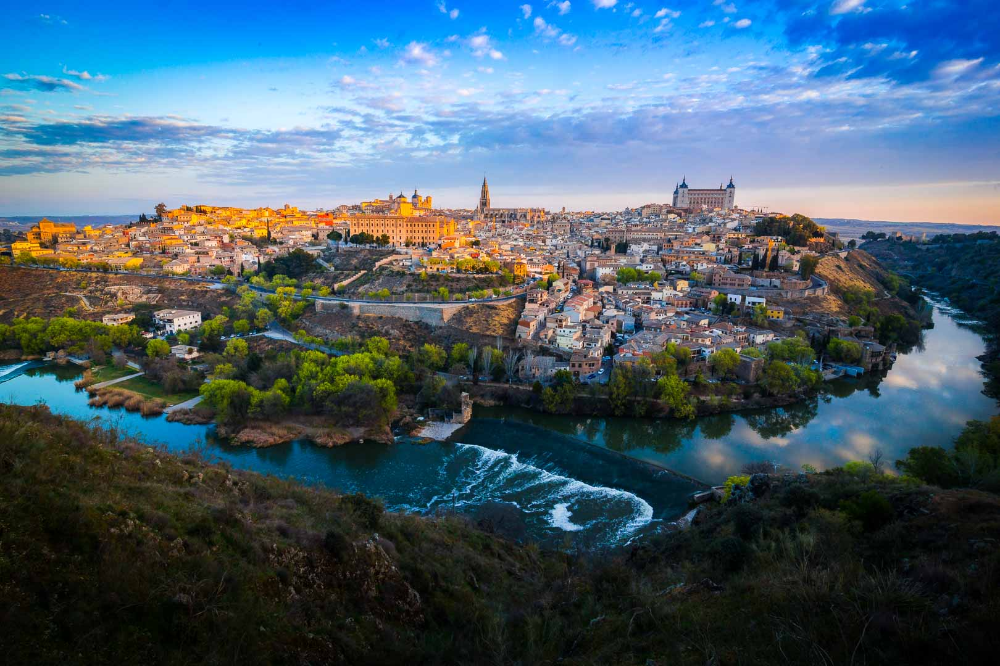
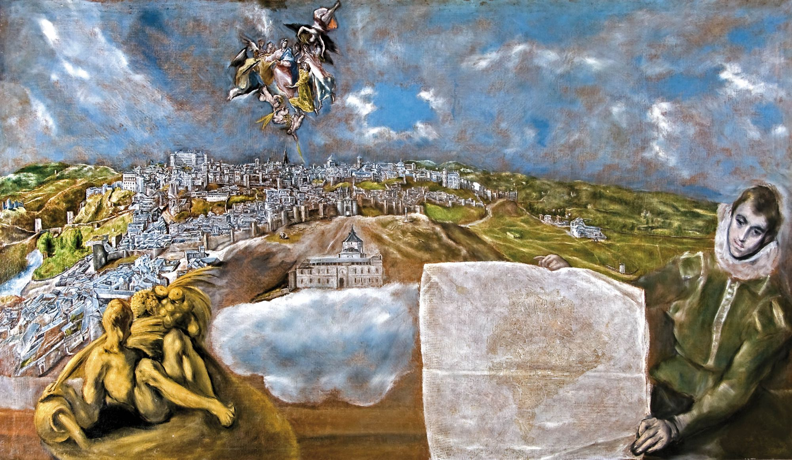

El Greco Convention Center - Toledo, Spain

The meeting will take place at the El Greco Convention Center, in Toledo.
📍 Paseo del Miradero s/n 45001 Toledo
The Toledo Conference Centre is located 70 km from Madrid, just 25 minutes by AVE high-speed train from
Atocha Station and 50 minutes by bus. It is located in the north-east of the city,
just a few metres from the central Plaza de Zocodover.
The privileged location of the Palacio de Congresos El Greco allows walking access to the main
historical and cultural landmarks of Toledo, as well as to the wide commercial and gastronomic
offer that the city centre has to offer.
How to get to the Conference Center
The closest airport to Toledo is Madrid Barajas. To get from Madrid Barajas to Toledo there are the following options:
- • By Taxi. From Madrid-Barajas airport, ~100/120 €, duration ~65 minutes.
- • By Metro + Bus. Unfortunately, there is no direct bus connection from Madrid Airport to Toledo. Therefore, to take the Alsa bus to Toledo, which runs every 30 minutes from 6:30 AM until midnight, you will need to get to the Plaza Elíptica interchange. The quickest way to reach this interchange is to take metro line 8 from the airport, which departs from Aeropuerto T4 (level -1 of Terminal 4) and the first level of Terminal 2, and ends at Nuevos Ministerios. From there, you will need to take metro line 6 to the Plaza Elíptica interchange. In total, the journey by metro to the Plaza Elíptica interchange and the direct bus to Toledo takes about ~2 hours, not including waiting time. The total cost of this trip is approximately 9.20€.
- • By Train. The Renfe lines do not offer direct transfers from the airport to Toledo. Therefore, if you want to travel from Madrid Airport to Toledo by train, you will need to take the commuter trains ('cercanias') from the airport (the airport train station is located on the underground level of Terminal 4) to Atocha station. From there, AVANT trains depart frequently for Toledo. If your arrival terminal is not T4, you can take the airport shuttle bus to reach the T4 train stop. The entire journey from Barajas Airport to Toledo by train takes 90 minutes, including an average waiting time. The price of the entire journey is ~16.60€.
Accomodation
There are many hotels, apartments or other types of accommodation in Toledo, but keep in mind that May is already peak-season in the city, so availability maybe limited. We encourage you to book your hotel as soon as possible. Most hotels allow cancellation without charges until a few days before arrival.
Below we list some hotel suggestions within 15 min walk from the conference center (information added on August 2024 this list is still being updated).
- Hotel Medina de Toledo
Bajada de los Desamparados, 2, 45003 Toledo, España 📞 +34 925 699 999 correo@hotelmedina.com - Hotel Boutique Adolfo
Pl. de Zocodover, 14, 45001, Toledo, España 📞 +34 925 252 919 hotel@adolfo-toledo.com - Hotel Domus Plaza Zocodover
C. Armas, 7, 45001, Toledo, España 📞 +34 925 25 29 25 reservas@domusplazazocodover.com - Hotel Carlos V
Pl. del Horno de la Magdalena, 4, 45001, Toledo, España 📞 +34 925 22 21 00 info@carlosv.com - Hotel Sercotel Alfonso VI
Cta. de los Capuchinos, 2, 45001, Toledo, España 📞 +34 925 22 26 00 reservas@sercotel.com - Hotel Real de Toledo
C. Real del Arrabal, 2-4, 45003, Toledo, España 📞 +34 925 22 93 00 info@hotelrealdetoledo.es - Hotel Abad Toledo
C. Real del Arrabal, 1, 45003, Toledo, España 📞 +34 925 28 35 00 info@hotelabad.com - Hotel Áurea Toledo
Bajada del Pozo Amargo, 7, 45002 Toledo 📞 +34 825 76 19 10 reservas@aureatoledo.com
What to visit in Toledo
Toledo, Spain, is a historic city known for its rich cultural heritage and well-preserved medieval architecture. Often referred to as the "City of Three Cultures," Toledo has been influenced by Christian, Jewish, and Muslim traditions. Here are some must-see attractions in Toledo:
 Toledo cathedral
Toledo Cathedral, also known as the Primate Cathedral of Saint Mary of Toledo, is a grand Gothic masterpiece, begun in 1226 and known for its intricate architecture and stunning art collection. It houses works by El Greco and features a richly decorated altarpiece and choir. The cathedral's towering facade and detailed stonework dominate Toledo’s skyline. It stands as a symbol of the city’s rich cultural and religious history.

Alcazar
The Alcázar of Toledo is a historic fortress perched atop the highest point in the city, offering commanding views of Toledo. Originally a Roman palace, it has been rebuilt and repurposed over the centuries, serving as a royal residence and military academy. Today, it houses the Army Museum, showcasing Spain’s military history. The Alcázar is a symbol of Toledo's strategic importance and enduring legacy.

Mosque of Cristo de la Luz
The Mosque of Cristo de la Luz is a well-preserved 10th-century mosque, reflecting the city's rich Islamic heritage. Its architecture features characteristic horseshoe arches and intricate brickwork. After the Christian reconquest, it was converted into a church, blending Islamic and Christian elements. The mosque stands as a testament to Toledo’s multicultural history.

Synagogue of Santa Maria la Blanca
The Synagogue of Santa María la Blanca, built in the 12th century, is a stunning example of Mudéjar architecture in Toledo. Its interior is characterized by white horseshoe arches, elegant columns, and intricate geometric designs. Originally a synagogue, it was later converted into a church, reflecting the city's complex religious history. The building is a symbol of Toledo's rich Jewish heritage and cultural diversity.

Synagogue el Transito
The Synagogue El Tránsito is a 14th-century masterpiece of Mudéjar architecture. It features intricate stucco work with Hebrew inscriptions and geometric designs, reflecting a blend of Jewish and Islamic art. Originally built by Samuel ha-Levi, it now houses the Sephardic Museum, preserving Spain's Jewish heritage. The synagogue is a testament to the cultural diversity of medieval Spain.

Monastery of San Juan de los Reyes
Built by the Catholic Monarchs, this 15th-century monastery features beautiful cloisters and a remarkable collection of Gothic and Mudejar architectural elements. The exterior is adorned with chains, symbolizing the release of Christian captives from the Moors. The monastery stands as a testament to the Catholic Monarchs' legacy and Spain's architectural grandeur.

San Martín Bridge
The San Martin Bridge in Toledo, Spain, is a medieval stone bridge spanning the Tagus River. Built in the late 14th century, it features five arches and is known for its impressive height and defensive towers at both ends. The bridge offers stunning views of Toledo’s historic skyline and has been a vital crossing point for centuries.

Mirador del valle
The Mirador del Valle is a panoramic viewpoint offering breathtaking views of the city's historic skyline. Perched above the Tagus River, it provides a sweeping vista of Toledo's ancient architecture, including the Alcázar and the Cathedral. This scenic spot is especially popular at sunset, where the city's golden hues are beautifully illuminated.

El greco Museum
The El Greco Museum is dedicated to the life and works of the renowned painter El Greco. Housed in a 16th-century building, it features a collection of his masterpieces, including "The Apostles" series and "View of Toledo". The museum also recreates the artist's home and studio, offering insight into his life and creative process.